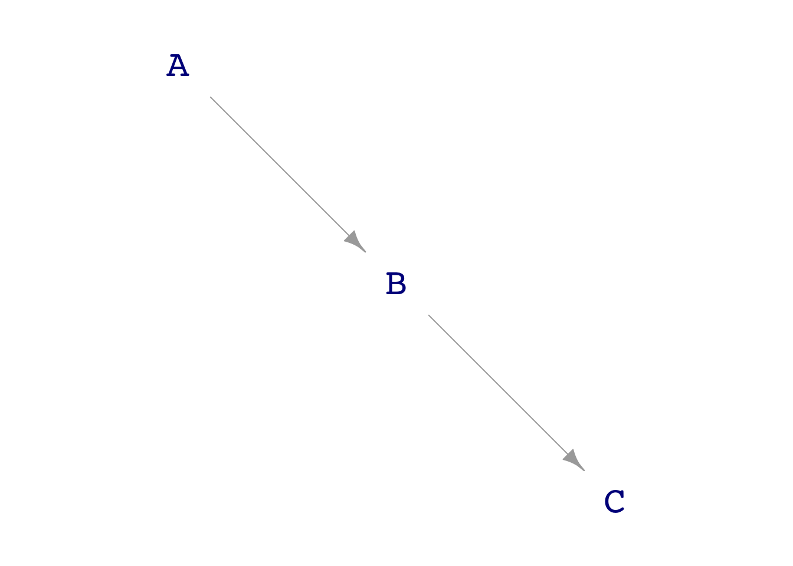
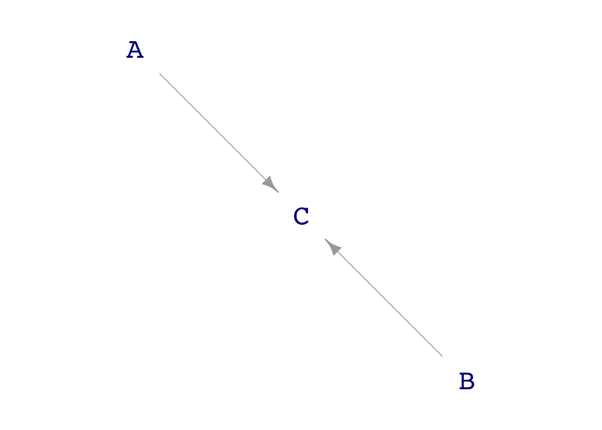

Math 300Z: In-class group activity
Simple causal paths
Mediator
- To see the full path from A to C, should you include B as a covariate?
- To observe the relationship A \(\rightarrow\) B, should you include C as a covariate?
- To observe the relationship B \(\rightarrow\) C, should you include A as a covariate?
mediator <- dag_make(
A ~ exo(),
B ~ 2.5*A + exo(),
C ~ -1.2*B + exo()
)
dag_draw(mediator)
Samp <- sample(mediator, size=1000)# Question 1
lm(C ~ A, data=Samp) |> conf_interval()
lm(C ~ A + B, data=Samp) |> conf_interval()# Question 2
lm(B ~ A, data=Samp) |> conf_interval()
lm(B ~ A + C, data=Samp) |> conf_interval()# Question 3
lm(C ~ B, data=Samp) |> conf_interval()
lm(C ~ B + A, data=Samp) |> conf_interval()Common cause
common_cause <- dag_make(
A ~ exo(),
B ~ exo(),
C ~ 5*B - 2*A + exo()
)
dag_draw(common_cause)
Samp <- sample(common_cause, size=1000)- To see the direct relationship between A and C, should you include B as a covariate?
- To see the relationship between B and A, should you include C as a covariate?
# Question 1
lm(C ~ A, data=Samp) |> conf_interval()
lm(C ~ A + B, data=Samp) |> conf_interval()# Question 2
lm(A ~ B, data=Samp) |> conf_interval()
lm(A ~ B + C, data=Samp) |> conf_interval()Contributing causes
contrib_causes <- dag_make(
B ~ exo(),
A ~ exo(),
C ~ -2*B + 3*A + exo()
)
Samp <- sample(contrib_causes, size=1000)- To see the effect of B on C, do you need to include A as a covariate?
# A tibble: 2 × 4
term .lwr .coef .upr
<chr> <dbl> <dbl> <dbl>
1 (Intercept) -0.0387 0.158 0.355
2 B -2.02 -1.81 -1.60 # A tibble: 3 × 4
term .lwr .coef .upr
<chr> <dbl> <dbl> <dbl>
1 (Intercept) -0.0449 0.0172 0.0793
2 B -2.01 -1.94 -1.88
3 A 2.95 3.01 3.07 - Which model has the better confidence interval on B?
Collider
Same network as contributing causes, but focussing on relationship between A & B.
- To see the correct (lack of) relationship between A and B, should you include C as a covariate?
# A tibble: 2 × 4
term .lwr .coef .upr
<chr> <dbl> <dbl> <dbl>
1 (Intercept) -0.0152 0.0468 0.109
2 B -0.0216 0.0436 0.109# A tibble: 3 × 4
term .lwr .coef .upr
<chr> <dbl> <dbl> <dbl>
1 (Intercept) -0.0201 -0.000492 0.0191
2 B 0.562 0.586 0.609
3 C 0.293 0.299 0.306 Confounder
confounder <- dag_make(
A ~ exo(),
B ~ 4*A + exo(),
C ~ 2*A + 0.5*B + exo()
)
Samp <- sample(confounder, size=1000)- To see the correct direct connection between B and C, should you include A as a confounder?
lm(C ~ B, data=Samp) |> conf_interval()
lm(C ~ B + A, data=Samp) |> conf_interval()